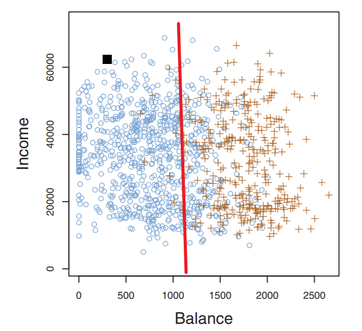
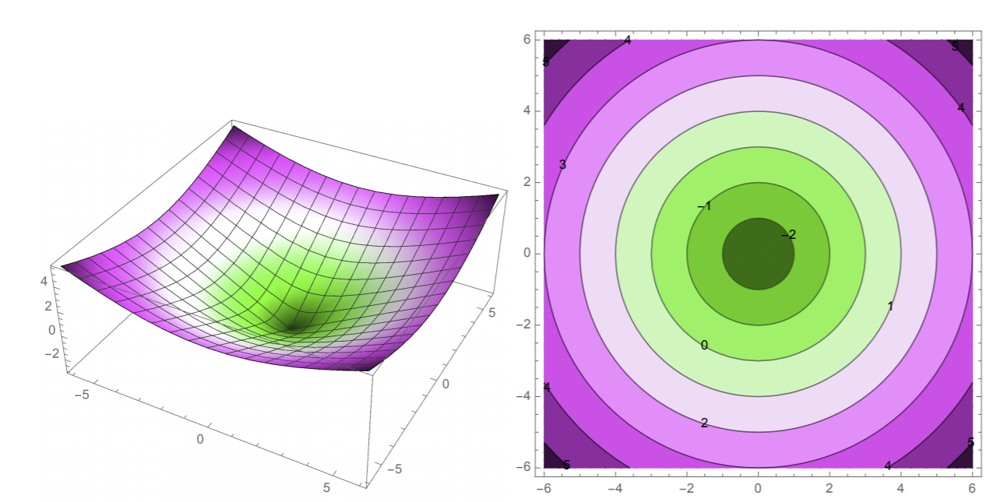

Behind the Decision Boundary¶
For convenience we’ll show our credit risk classifier again:
{kind=link}
What exactly is this red line, and how is it formed?
First of all, many classifiers compute an underlying decision function \(f(x)\) that maps a point \(x\) to a scalar such that if \(f(x) > 0\) then \(x\) belongs in class C, and if \(f(x) \leq 0\) then \(x\) doesn’t belong in class C.
Note
Decision functions are also called predictor functions or discriminant functions. The latter is used in more complex contexts, like Gaussian discriminant analysis - we’ll explore what this is in much more depth in a later chapter.
Then, we can explicitly denote the decision boundary as the set of all points such that decision function \(f(x) = 0\). Mathematically, we denote the boundary as set \(\{x \in \mathbb{R}^d : f(x) = 0\}\). Each point in our set is in \(d\)-dimensional feature space. This set usually forms a hyperplane of dimension \(d-1\) (which lives in \(\mathbb{R}^d\)).
The set \(\{x \in \mathbb{R}^d : f(x) = 0\}\) is also called an isosurface of \(f\) for isovalue 0. The isovalue is what the function output should be equal to for qualifying points \(x\). For example, \(\{x \in \mathbb{R}^d : f(x) = 2\}\) is the isosurface of \(f\) with isovalue 2.
To get a better idea of this, let us look at a couple plots of \(f(x,y) = \sqrt{x^2 + y^2} - 3\):
{kind=link}
Both plots plot \(f\), just in different ways. On the left we see our 3D plot and a visualization of what the “actual” function looks like in terms of shape. On the right is a 2D contour plot: we are plotting the various isocontours (decision boundaries) of \(f\) and using colors to differentiate different isocontours/values. Note that the isocontours are labeled with their respective isovalues: for example, the decision boundary with isovalue 0 is the third ring out.
Linear classifiers usually use a linear decision function. There will be some examples that we’ll explore in the next chapter with support vector machines (SVMs): no function but a linear boundary is still produced.
Given that our decision function is \(f(x) = w \cdot x + \alpha\), our decision boundary is a hyperplane \(H = \{x: w \cdot x = -\alpha\}\). The coefficients of \(w\) as well as intercept term \(\alpha\) are called the weights or parameters of our linear model, and are learned in the training phase. Let’s establish some intuition in using this hyperplane by proving some important theorems.
Theorem 1 (Orthogonality of \(w\))
Let \(x, y\) be two points that lie on hyperplane \(H\). Then, \(w \cdot (x-y) = 0\) (where \(w\) is the hyperplane weights that do NOT include intercept term \(\alpha\)).
Proving this is pretty straightforward. Try it yourself first before viewing below:
Proof. simply multiply out \(w \cdot (x-y)\).
We know for both of these points, \(w \cdot x + \alpha = w \cdot y + \alpha = 0\)
So \(w \cdot (x-y) = w\cdot x - w \cdot y = (-\alpha) - (-\alpha) = 0\)
Remember the identity \(\cos \theta = \frac{x \cdot y}{||x|| \cdot ||y||}\), where \(\theta\) is the angle between vectors \(x,y\). Because the dot product of \(w\) and \(x-y\) was 0, then \(\cos \theta = 0\) gives \(\theta\) as 90 degrees. Thus, \(w\) is orthogonal to \(H\) and thus any vector (datapoint) that lies on \(H\). For this reason, \(w\) is called the normal vector of \(H\).
Note the isovalue chosen will not matter, as these just form parallel hyperplanes, and \(w\) will be orthogonal to all of them.
If \(w\) is a unit vector (is normalized to a unit vector), then \(w \cdot x + \alpha\) is the signed distance from a data point \(x\) to the hyperplane \(H\). Of course, this is the line that connects \(x\) to the closest point on \(H\). Such a distance will be positive if \(x\) is on the same side of the hyperplane as \(w\) (\(w\) points to it) and is negative if on the opposite side.
Definition 2 (Signed Distance)
Given \(w, a\) that uniquely forms a decision boundary hyperplane \(H\), the signed distance from \(H\) to an arbitrary data point \(x\) is given by
Moreover, the distance from \(H\) to the origin is \(\alpha\). We can easily verify this by using our previous proof of signed distance by letting \(x\) = the origin. So then the signed distance from the origin to the hyperplane is \(\alpha\).
Hence we have proved another theorem:
Theorem 3 (\(\alpha\))
For any hyperplane \(H\), \(\alpha = 0\) if and only if \(H\) passes through the origin.
You’ve had experience with this when drawing 1D lines: we know that \(y = cx\) for some constant x doesn’t have an intercept term and will always pass through the origin. This property, of course, extends to many dimensions.
So we’ve covered the basics of the linear classifier in terms of its decision boundary, its supporting decision function, and the parameters \(w, \alpha\) that uniquely define it. Familiarizing yourself with the math in this section might not be fun, but it is important as it will extend to the more complicated classification (and regression!) techniques we’ll see soon.